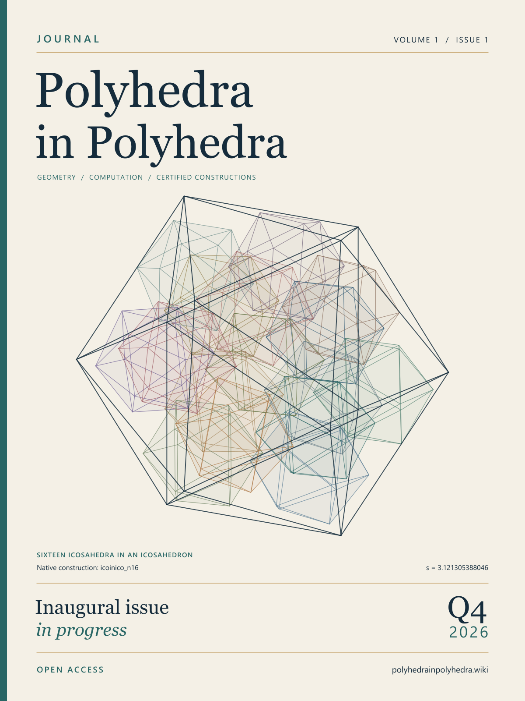

Please note: until an issue is published, the papers in it are still subject to potential small revisions.
Volume 1 · Issue 1 · October–December 2026
Q4 2026
The inaugural issue
is in progress.
A first quarterly edition on finite packing, exact certificates and the structures they reveal.
Online articles will appear as they complete review. The issue remains open through 31 December 2026; acceptance depends on the review decision.
No article has yet been accepted through this Journal's independent review programme. The linked research collection is a reading library, not a list of accepted issue articles.

Digital first, quarterly in print
Articles will be free to read online. Quarterly print editions are planned for academics and research libraries worldwide. Availability and shipping terms will be announced before orders open.
Register print interest · Editorial policies · Inspect the construction on the cover